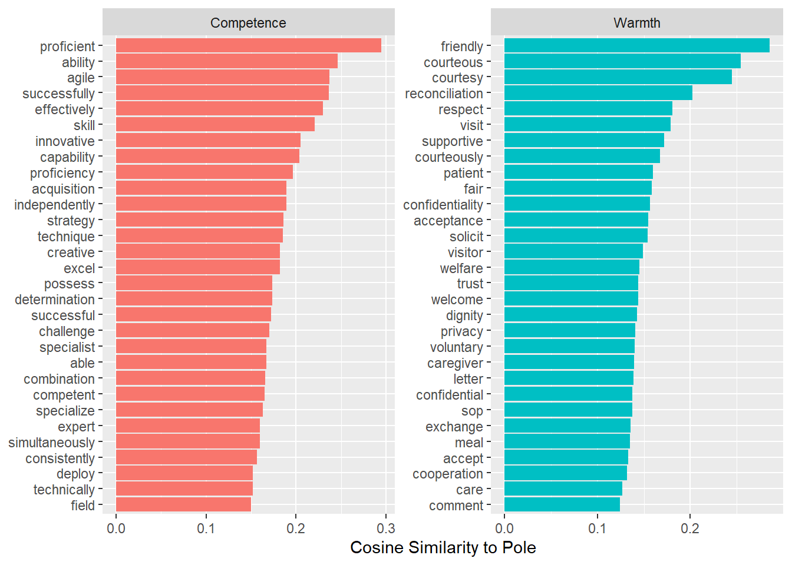

Skipping install of 'text2map.pretrained' from a gitlab remote, the SHA1 (f17fbff7) has not changed since last install.
Use `force = TRUE` to force installation1 Word Embeddings with US Federal Job Advertisements
The following code reproduces components of the analysis for the in-progress manuscript, “Occupational Segregation and Gendered Language in Job Advertisements”
This project investigates whether and to what extent the gendered composition of the federal workforce is associated with the amount of gender stereotypical language in federal job advertisements, and, if so, whether this relationship holds across different organizational climates.
Our data comprises 5,526 job ads scraped at a single timepoint from the US federal job-posting site USAJobs.gov, along with a number of occupational characteristics imported from other sources such as the Current Population Survey, O*NET, The Federal Employee Viewpoint Survey, and the Survey on the Future of Government Service.
We conceptualize stereotype language in terms of social psycholoy’s Stereotype Content Model (Cuddy, Fiske, and Glick 2008). To operationalize the stereotype content model, we utilized word embeddings in conjunction with Stoltz and Taylor’s (2019) Concept Mover’s Distance as an instrument for measuring the degree of warmth- and competence-language across job ads.
1.1 Setting up the Workspace
Let’s load some packages
library(ggrepel)
library(text2map)
library(text2vec)
library(gutenbergr)
library(tidyverse)
library(textclean)
library(stringi)
library(text2map.pretrained)
library(flextable)
library(huxtable)
library(sjPlot)
library(interactions)
library(remotes)You might have to install a couple of these, but all of them can be installed with install.packages() except for text2map.pretrained, so go ahead and download that with the following command
remotes::install_gitlab("culturalcartography/text2map.pretrained")Now, go ahead and load “workingjobs.df” into your workspace. You can use file.choose() with load() to pull up a file-explorer window and manually select the data.
load(file.choose())We also need to download our pre-trained vector embeddings. We use fastText embeddings, which are trained on a large corpus of English Wikipedia and various news data sets. This way, our embeddings will reflect a sense of public meaning. This works well for many research questions, but you may want to consider training your own embeddings in the event that your data is stylistically unique.
Caution
The fastText embeddings file is very large. It will be over a gigabyte, so keep that in mind before you download. You only have to run the following command once ever, so consider commenting it out of your script after you do so. You don’t want to keep downloading such a huge file by mistake.
download_pretrained("vecs_fasttext300_wiki_news")After that finishes downloading, go ahead and load the embeddings object in. You will want to do this anytime you work with your embeddings. It won’t download anything new—it just retrieves the file you downloaded with the command above.
data("vecs_fasttext300_wiki_news")
our_wv<-vecs_fasttext300_wiki_news
rm(vecs_fasttext300_wiki_news)Because the file name is a bit cumbersome, Stoltz & Taylor recommend renaming the object and then removing the original file.
1.2 Calculating our Response Variable with Concept Mover’s Distance
Below, we will use pre-trained vector encodings to calculate the Concept Mover’s Distance for stereotype content language across all of our job ads. Note that much of this section makes heavy use of the excellent text2map package from Stoltz and Taylor (2023).
1.2.1 Wrangle our Embeddings
First, we’ll borrow some code from Mapping Texts to build a document-term matrix. This will give us a new dataframe where each row is a document, each column is a single word, and each cell reflects the count of some word in a given document.
dtm_ja <- workingjobs.df |>
dtm_builder(string_lemma, doc_id) |>
dtm_stopper(stop_list = get_stoplist("snowball2014"),
stop_docprop = c(.01, Inf))string_lemma is the column that contains our job ad text after various pre-processing procedures. Note that we are also removing a list of common stop words, using the predefined Snowball list. Stop words are typically function words that occur with high frequency. For cultural measurement of text data, we are often more interested in content words that bare more straightforward semantic information, so including stop words can muddy our instrument. Lastly, we use stop_docprop to set a low-end exclusion criteria for word frequency. Any word that appears in less than 1% of all documents will be dropped from our DTM.
Now, let’s take a subset of the word embeddings object. We want an object that includes the vector embeddings for only the words in our cleaned DTM. Remember that the columns of the DTM are words in the job ads corpus, and the row names of our_wv are all 1 million words in the pre-trained embeddings. We can use this to subset.
job_vectors <- our_wv[rownames(our_wv) %in% colnames(dtm_ja), ]1.2.2 Mapping Warmth and Competence
For Concept Mover’s Distance, we need two word lists reflecting each of our two oppositional concepts of interest. Let’s load in our paired lists of warmth and competence words. Note that we derived these pairs from the warmth/competence seed dictionary created by Gandalf, Bai, and Fiske’s (2020).
load(file.choose())Go ahead and load in “scm_antonym_pairs.csv”
Now we will calculate a semantic direction using our paired wordlist and our original word embedding object, our_wv. The semantic direction is the difference of the two vectors, which gives us the pole between the warmth and competence regions we defined in embedding space.
Then, we’ll use the semantic direction to generate the Concept Mover’s Distance for each job. You can refer to Stoltz & Taylor’s original paper on this for more details on the calculation, but it essentially maps each document along the semantic direction pole. This will allow us to estimate how close the vector space of each job ad is to the competence region vs. the warmth region. This gives us our measure of conceptual prominence.
sd_stereo <- get_direction(scm_ant, our_wv, method="paired")
closeness <- CMDist(dtm= dtm_ja, cv = sd_stereo, wv = job_vectors)The closeness object will be a 2-column data frame including the Concept Mover’s Distance scores for each ad and the doc_id column, which we can use to merge these values into our job ads data frame.
Because of the way we set up our paired wordlist, positive values reflect more engagement with competence language, and negative values reflect more warmth engagement.
Note that it will name the CMD column with the format *_pole, where * is a stand-in for the first word on the left-side of our wordlist of warmth/competence pairs. That will be ‘ability’ in our case, so let’s rename it something more descriptive.
names(closeness)[2]<-"comp_warm_scale"Now, we can merge these values into our original data frame.
workingjobs.df <- merge(workingjobs.df, closeness)1.2.3 View the Warmest and Most Competence Words
Now we’ve got our measure of warmth/competence prominence! There’s plenty more we can do with embeddings, but we are winding down the current tutorial.
I’ll leave you with one last neat example highlighted in Mapping Texts I will borrow some more code from Stoltz and Taylor to show you how you can view the individual words whose vector embeddings were closest to warmth or competence. CMD is a document level measure, but we can do all kinds of fun stuff with individual embeddings. Below are the words estimated to most strongly engage one concept or the other.
comp_warm <- get_direction(anchors = scm_ant, wv = our_wv, method="paired")
row.names(comp_warm)[1]<-"competence_pole"
sim_dir <- sim2(comp_warm, job_vectors, method = "cosine")
df_dir <- data.frame(competence_pole = sim_dir["competence_pole", ],
terms = colnames(sim_dir)) |>
mutate(comp_warm_label = ifelse(
competence_pole >= 0,
"Competence", "Warmth"),
comp_warm = abs(competence_pole)
)
df_dir |>
group_by(comp_warm_label) |>
slice_max(comp_warm, n = 30) |>
mutate(term = fct_reorder(terms, comp_warm)) |>
ggplot(aes(term, comp_warm, fill = comp_warm_label, label = terms)) +
geom_col() +
guides(fill = "none") +
labs(x = NULL, y = "Cosine Similarity to Pole") +
coord_flip() +
facet_wrap(~comp_warm_label, scale = "free")